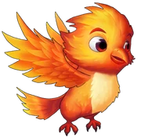
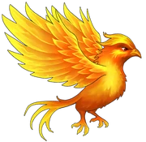
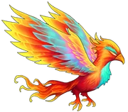
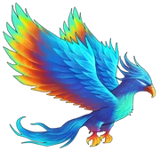

Ankaa is a phoenix and one of the guardians in the game. Ankaa unlocks when both Grace and Vermilion have reached their fifth evolution. It can attack a bit faster than once per second. The attack will hit all enemies, where the main target receives 100% of the damage and the surrounding enemies receive 50% of the damage. It provides you with the Firestone Finder aura.
In the mythic tapestry of fantastical creatures, the phoenix stands as a majestic embodiment of eternal renewal and fiery resilience. Its existence, born from the crucible of celestial flames, is an ethereal dance between life and death. Feathers aflame with hues that defy mortal comprehension, the phoenix navigates the realms of existence with an otherworldly grace. Legends speak of its song, a haunting melody that echoes through the ages, carrying the tales of rebirth and transcendence.
As a creature of paradox, the phoenix is both destroyer and creator, its life cycle a testament to the cyclical nature of existence. When death descends upon its resplendent form, the phoenix succumbs to the flames, only to rise anew from the ashes. Each reincarnation, a rebirth of sublime beauty, marks the continuation of a celestial saga that transcends the boundaries of time and space. The phoenix, a guardian of cosmic balance, radiates an enigmatic aura that captivates those fortunate enough to witness its transcendent existence.

Hatchling
Amidst the embers of celestial fires, a hatchling emerges, its downy feathers ablaze with the promise of newfound life. Fragile and delicate, this fledgling phoenix embodies the essence of potential, a flickering spark in the vast expanse of eternity. The air shimmers with the residual heat of its birthing flames, and as the hatchling spreads its wings for the first time, a radiant glow illuminates the darkness. In this nascent stage, the phoenix's song is but a soft and tentative melody, a whisper of the majestic symphony it is destined to conduct.
The hatchling's existence is a delicate dance on the edge of mortality, and it learns to navigate the realms of life and death with instinctual grace. Its fiery plumes, though not yet fully developed, carry a luminescent glow that hints at the brilliance to come. The hatchling, adorned in the flames of its birth, embarks on a journey of self-discovery, testing the boundaries of its newfound existence. As it takes its first flight, the echoes of its ethereal song weave into the fabric of the cosmos, marking the beginning of a cosmic odyssey.'
Young Phoenix
As the hatchling matures, the flames that envelop its form intensify, heralding the transformation into the Young Phoenix. No longer constrained by the fragility of infancy, the young creature's wingspan expands, and its feathers become a kaleidoscope of incandescent hues. With each beat of its resplendent wings, the air itself seems to catch fire, leaving trails of ephemeral flames in its wake. The once tentative melody now crescendos into a more pronounced song, echoing with the vigor of youth and the promise of untold adventures.
In this stage of evolution, the young phoenix embraces the challenges of the mortal realm. It learns the art of flight with graceful mastery, soaring through the celestial tapestry with an innate sense of purpose. The flames that engulf its form burn with a vibrant intensity, symbolizing the passions and ambitions that drive the young creature forward. Its song, once a mere whisper, now resonates with a melodic strength that captivates the hearts of those who bear witness to its majestic flight.
The Young Phoenix, guided by an ancient instinct, embarks on a quest for knowledge and experience. It seeks out the secrets hidden within the realms of fire and shadow, its flames flickering with the wisdom yet to be unveiled. As it navigates the intricate dance between mortality and immortality, the Young Phoenix emerges as a beacon of hope and inspiration, illuminating the path to destiny with the radiant glow of its existence.

Tenacious Phoenix
In the crucible of challenges, the Young Phoenix evolves into the Tenacious Phoenix, a creature marked by the scars of trials and the resilience forged in the flames of adversity. Its feathers, now a tapestry of vibrant and subdued hues, tell the tales of battles fought and victories earned. The once carefree melody of youth transforms into a haunting anthem, echoing the tenacity that defines this stage of existence.
The Tenacious Phoenix navigates the turbulent currents of existence with a newfound wisdom, its flames burning with an inner strength that defies the ebb and flow of time. The creature's wings, weathered by the storms of experience, carry the weight of accumulated knowledge. Each beat is a testament to the indomitable spirit that propels the phoenix forward, despite the challenges that threaten to extinguish its eternal flame.
As a symbol of endurance, the Tenacious Phoenix becomes a beacon of hope in the face of adversity. It seeks out the downtrodden and the weary, offering the warmth of its flames as a source of solace and inspiration. The anthem of its existence resonates with echoes of survival and triumph, a melodic reminder that even in the darkest moments, the flame of resilience can endure.

Radiant Phoenix
With each passing trial, the Tenacious Phoenix undergoes a metamorphosis, emerging as the Radiant Phoenix. Its once vibrant feathers now shimmer with an ethereal luminosity, casting a brilliant glow that transcends the boundaries of the mortal realm. The flames that envelope its form are a celestial dance, an intricate choreography of light and heat that paints the heavens with hues unseen by mortal eyes. The anthem of its existence reaches a crescendo, a symphony of celestial notes that resonate with the very fabric of reality.
The Radiant Phoenix becomes a living embodiment of enlightenment and transcendence. Its wings span wide, embracing the cosmos, and its flames burn with a transcendent purity that purges the darkness from the hearts of those touched by its presence. As it soars through the celestial expanse, the Radiant Phoenix becomes a guiding light, illuminating the path to spiritual awakening and enlightenment.
In this stage of evolution, the phoenix's song transcends the limitations of mortal comprehension. It becomes a conduit of cosmic wisdom, an eternal melody that weaves through the threads of existence, connecting the past, present, and future. The Radiant Phoenix, now a celestial entity, embodies the culmination of its journey—a beacon of radiant illumination in the vast expanse of the cosmos.

Ultimate Phoenix
In the apex of its evolution, the Radiant Phoenix ascends to the pinnacle of existence, becoming the Ultimate Phoenix. Its form transcends the limitations of the material world, its feathers now a cosmic tapestry that reflects the boundless expanse of the universe. The flames that surround it burn with the intensity of a thousand suns, radiating a divine brilliance that defies mortal comprehension. The celestial anthem of the phoenix reaches a sublime climax, echoing through the cosmos as a harmonious convergence of time, space, and eternity.
As the Ultimate Phoenix, this divine entity becomes a guardian of cosmic balance, a cosmic force that weaves through the very fabric of reality. Its wings, vast and majestic, create celestial currents that shape the destiny of stars and galaxies. The flames that engulf its form are not mere fire but the essence of creation and destruction, a testament to the cyclical nature of existence.
{kind=link}
{kind=link}
{kind=link}
{kind=link}
{kind=link}
{kind=link}
{kind=link}
{kind=link}
{kind=link}
{kind=link}